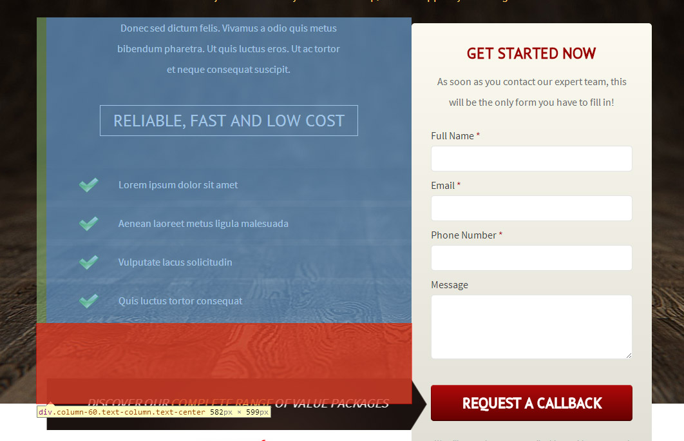
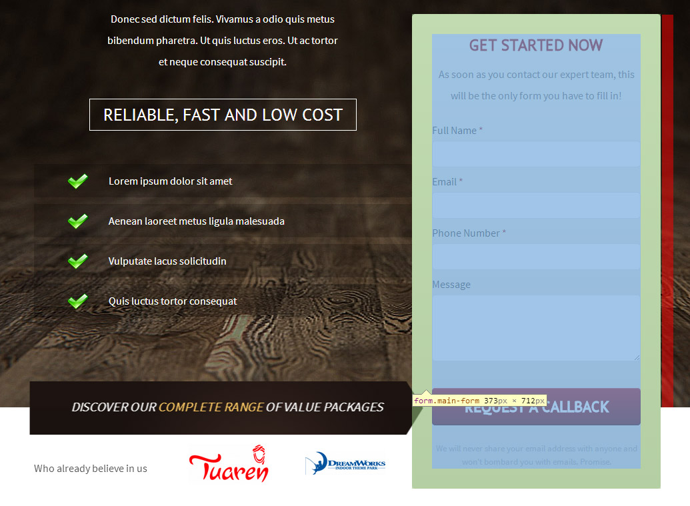

Introduction
Welcome to Approach - HTML Landing Page! Thank you for purchasing this product.
If you have any questions that are beyond the scope of this documentation, please feel free to email us via the form on http://www.themeforest.net/user/G10v3.
Documentation Improvements
If you have any comments, please mail us via the form on http://www.themeforest.net/user/G10v3.
Template Installation
Files are written in simple HTML/CSS/JavaScript, so you do not need an internet connection in order to display or edit the template, you can view this template in any web browser from your computer.
It's important to understand that you must have an online server in order to use this landing page. The server can be purchased at many different places around the internet. It's a simple thing: You need to put the files that you purchased somewhere so others can find them online.
Upload to your server
- Start your FTP client (I recommend FileZilla, which is free) and login to your server.
- Locate, on your server, the domain folder you wish to upload your template files to. You have to click and drag every file/folder you have inside the template folder into your FTP client.
- Once the files are done uploading, you can access your website via browser.
Customization
The only things you need to change the template are a text editor and a browser to see the outcome. For the text editor I recommend Notepad++, which is free.
Preloader
You can disable the preloader by adding the no-preloader class to the body.
<body class="no-preloader" id="top">
sections
Each part of the template is organized into sections.
As you can see in the HTML files, each section is independent from the others: this gives you the flexibility to copy/paste/delete sections and create your layout. As an example, the Hero section used in the second demo of the landing page:
<section class="hero">
<div class="container">
<div class="row">
<div class="column-100 text-center">
<h3>All our package prices <span>include</spa> the $13 Filing Fee</h3>
</div>
</div>
</div>
</section>
Given this example, you can select all the code of the section, then copy/cut and paste between other sections.
Fonts
The landing pages uses entirely the Google Web Fonts service, you have the flexibility to change the font in no time and you have 600+ fonts at your disposal.
To change the font:
- Head over Google Web Fonts list.
- Choose your fonts and click on Add to collection. Once you have added all the fonts you need, click on Use.
- Search for Add this code to your website then copy the line of code that you have found, it'is something like the line below:
<link href='http://fonts.googleapis.com/css?family=Pirata+One:300,400' rel='stylesheet' type='text/css'>
- Replace line 40 on the HTML filewith the line you just copied.
<link href='http://fonts.googleapis.com/css?family=Source+Sans+Pro%7cPT+Sans:300,400,600' rel='stylesheet' type='text/css'>
- On base.css or first/second-demo.css search for 'PT Sans' and replace with, given the example above, 'Pitata One'.
Images
As you can see in the HTML files, images of the online preview have been replaced with placeholders.
The size values displayed on the images are NOT the ideal size of the images.
It's still recommended for the backgrounds to use images of at least 1920px width.
Intro Product Image
This image is displayed on the first demo of the landing page.
The position of the image is already set on absolute, once you replace the placeholder you have to adjust the position in order to achieve a visual effect similar to the live preview. To fix the position, you have to adjust top and left positioning on first-demo.css, line 147. For example these are the values used on the live preview:
.intro-image {
top: 0;
left: -75px;
}
Bottom Product Image
This image is displayed on the first demo of the landing page, inside the bottom-cta section.
The position is set on absolute, once replaced you have to fix the position of the image, like for the intro product image.
You'll find the css on first-demo.css, line 310.
.bottom-cta-image {
left: 15px;
top: 0px;
}
Main Form
To set up the contact form, you have to replace few default values on send-mail.php with your own.
/* ==============================================
Settings
============================================== */
define("MAILTO" , "email@website.com");
define("SUBJECT" , "Approach Web Form");
define("ERROR_MESSAGE" , "Error sending your message");
Form Changes
If you need a field to be required, simply add the class required
<input type="text" name="name" id="name" class="required">
Form Position
If you want the form to be on the left, just add the class left-form to the body:
<body class="no-preloader left-form" id="top">
Success Message
You'll find the markup of the success message popup at the bottom of the HTML file.
<div id="thanks-popup" class="section thanks-popup mfp-hide">
<div class="thanks-heading">
<h1>Thank you for trusting us!</h1>
</div>
<div class="thanks-body">
<p>We will contact you shortly!<br>
In the meantime you can download our <a href="#">services brochure</a>.</p>
<p>Want to know when we have special deals?</p>
<a class="button orange" href="#">Visit special deals page</a>
</div>
</div>
Icons
Icons are based on Font Awesome.
<i class="fa fa-star-o"></i>
Replace the fa-* class of the i tag to change the icon. Look at Font Awesome for the complete list of the available icons.
Arrow
You can make the arrow animated by adding the animate-arrow class to the arrow element:
<div class="submit-arrow animate-arrow">Request new a <span>free sample</span> of our product</div>
Intro / Form Position
From 1.01 you can enable the auto positioning of the form, simply adding the auto-position class to the body.
<body class="no-preloader left-form auto-position" id="top">
If you want to have full control over the intro form position, keep reading!
After you've made all the necessary changes to the landing page, it's very likely that the original design has changed too.
You have to change only two css values to have the original design back.
.text-column {
padding-bottom: 190px;
}
.form-column {
margin-top: -596px;
}
text-column refers to the column beside the main form, and the padding bottom value refers to this space (red):

form-column refers to the column of the main form, and the negative margin top value refers to this space (red):

Adjust the margin top value to make sure that the submit button of the form is exactly in the middle of the line that separates the intro section from the rest of the landing page.
Version 1.01
Released on 10th April 2014.
- Added Auto Position feature.
- Fixed minor issues on responsive layout.
- Fixed / Updated documentation.
- Files changed:
- responsive.css
- custom.js
- index-first.html
- index-second.html
Version 1.02
Released on 21st July 2014.
- Fixed / Updated documentation.
- Added a line of code on first-demo.css
- Files changed: